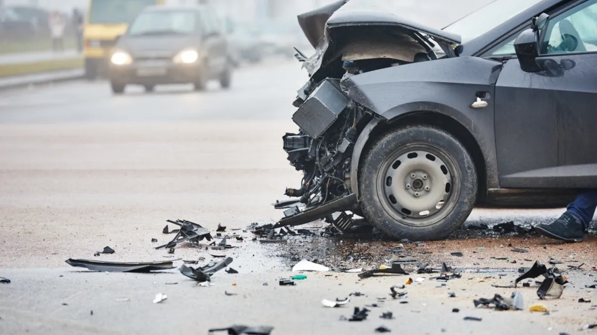
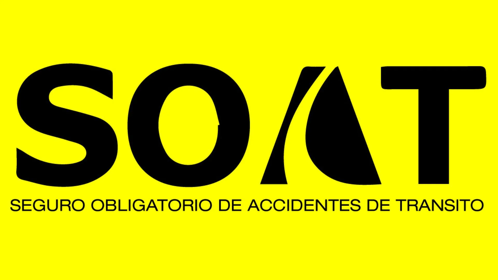

SEEKIA LEGAL
Tecnología e innovación al servicio de la justicia.
SERVICIOS

RECLAMACIONES POR INCAPACIDAD Y MUERTE EN ACCIDENTE DE TRÁNSITO
Investigaciones al servicio de la justiicia.

RECLAMACIÓN POR INCAPACIDADES SOAT
Obtención de evidencia mediante métodos investigativos.

REPRESENTACIÓN DE VÍCTIMAS, DEFENSA EN PROCESOS PENALES
Mitigación de riesgos en procesos de selección.
ACCIDENTES DE TRÁNSITO
- Análisis exhaustivo de las circunstancias del siniestro
- Recolección de pruebas como fotografías, videos y declaraciones de testigos.
- Evaluaciones técnicas para respaldar el reclamo.
- Asistencia en la presentación de documentación a aseguradoras y entidades legales.
RECLAMOS SOAT
- Validación de incapacidades con peritajes médicos y documentos legales.
- Guía completa para entender los derechos y procesos asociados al SOAT.
- Preparación y entrega de formularios y pruebas requeridas por aseguradoras.
DEFENSA PENAL
- Diseño de defensas sólidas adaptadas a cada caso penal.
- Identificación de puntos críticos para la mitigación de riesgos.
- Asistencia desde la etapa de investigación hasta el juicio.
- Equipo multidisciplinario comprometido con la defensa y representación.